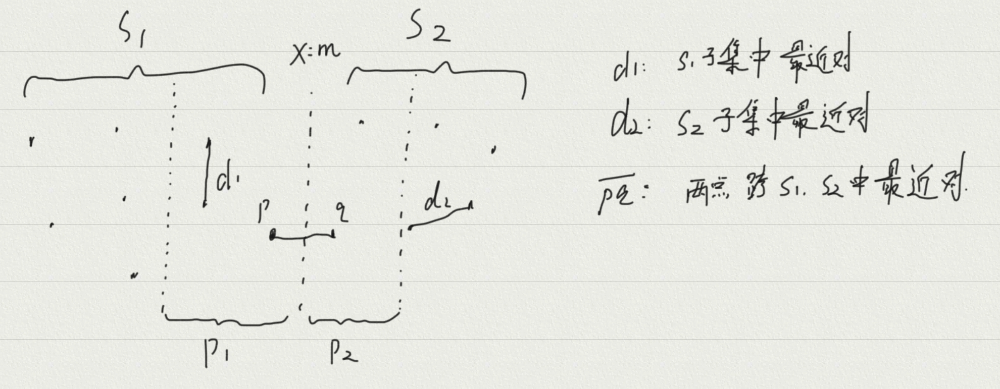
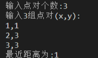

实验报告_2
实验三——最近对问题
一、实验题目
*设p1=(x1, y1), p2=(x2, y2), …, pn=(xn, yn)是平面上n个点构成的集合S，设计算法找出集合S*中距离最近的点对。 **
二、实验目的
- 进一步掌握递归算法的设计思想以及递归程序的调试技术
- 理解分治与递归经常溶蚀应用在算法设计之中
三、实验要求
- 分别用蛮力法和分治法求解最近对问题
- 分析算法的时间性能，设计实验程序验证分析结论
四、算法实现分析及结果
- 蛮力法
直接使用双重循环对所有结点进行遍历，并用一个距离函数来计算每两个结点之间的距离，再用一个变量来比较并记录当前的最小距离。
蛮力法非常容易想到，但是蛮力法的时间复杂度非常高，当结点个数较多时，程序运行速度会比较缓慢。
- 蛮力法核心代码
1 | double Min_dis(int *x,int *y,int n) //输入两个数组 |
这个代码仍然有修改空间，可以设计一个结构体实例化来表示一个结点，能够让代码更加易读。
- 时间复杂度分析
$$
时间复杂度:O(n*n)
$$
- 蛮力法实验结果

- 分治法
注意：使用分治法前，我们要先选择对结点的一个轴坐标进行排序
最近对问题的分治策略，大概分为以下三步：
- 划分子问题：首先将所有结点划分为两部分，先求子集S1的最近对，再求子集S2的最近对，最后再考虑最近对处于两个子集交叉位置的情况。
- 求解子问题：若最近对就在S1或S2子集，那么直接进行递归运算。因为还需要考虑最近对在S1、S2子集中交叉的情况，所以我们要以mid为起点，分别向左右判断，寻找到一个d3，并与S1、S2中得到的距离进行判断。
- 合并子问题：将d1、d2、d3比较得到的最小值返回到上一层递归函数中。
- 分治法思想

- 分治法核心代码
1 | //使用分治法前，一定要先对结点的一轴进行排序 |
- 时间复杂度分析
$$
时间复杂度:O(n*log(n))
$$
- 分治法实验结果

五、实验感悟
最近对问题的核心思想就是去找到两组点，其距离最近。对于点集合，我们很容易的就会想到两种解决方法。利用蛮力法进行双重for循环，逐个比较距离。利用分治法和递归函数，将点集合分为左右两组，分别进行递归判断，再考虑点在一左一右的情况。这两种思想都是比较容易想到的，且实现起来难度不大。分治法的使用前提就是对于大的问题能够分割成小问题逐个求解，再将求解的结果合并得到大问题的解。分治法思想是符合人们日常生活解决问题常规思维逻辑的。
本博客所有文章除特别声明外，均采用 CC BY-NC-SA 4.0 许可协议。转载请注明来自 Zzhr's Blog！